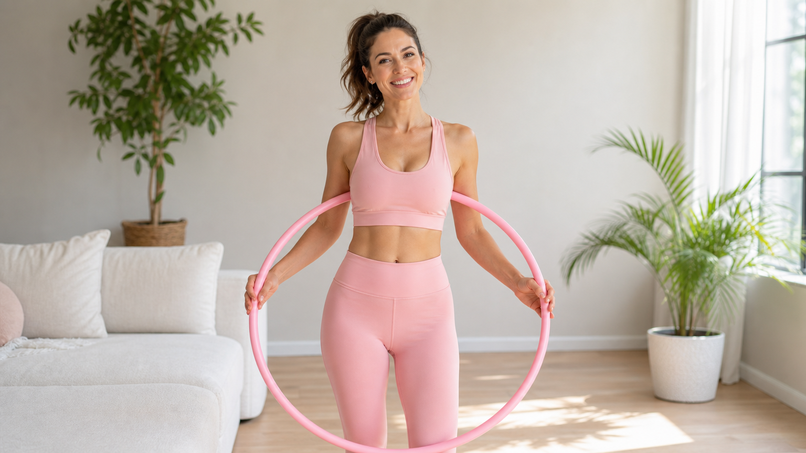

フラフープの効果：結論から先にお伝えします
フラフープを週3回・1回10〜15分続けることで、次の3つの変化が期待できます。
- ✅ ウエスト周りの引き締め
- ✅ 体幹・インナーマッスルの強化
- ✅ 血行促進によるむくみ軽減
「本当に効くの？」と半信半疑な方も多いですが、フラフープは回し続けるために腹筋・背筋・骨盤周りの筋肉を総動員するため、見た目以上にしっかり体を使う運動です。
フラフープで期待できる5つの効果
① ウエストの引き締め
フラフープを回す動作は、腹斜筋・腹横筋といったウエスト周りの筋肉を継続的に刺激します。
毎日ではなく週3〜4回のペースでも、1か月続けることでウエストラインの変化を感じやすくなります。
② 体幹・インナーマッスルの強化
フラフープを落とさないよう体を動かし続けることで、表面の筋肉だけでなく深層にあるインナーマッスルも鍛えられます。
体幹が整うと姿勢が改善され、日常生活での疲れにくさにもつながります。
③ 血行促進・むくみ軽減
腰周りをリズムよく動かすことで骨盤周辺の血流がアップ。
夕方に気になる脚のむくみが翌朝スッキリしやすくなる、という声もよく聞かれます。
④ 消費カロリーの底上げ
フラフープ10分間の消費カロリーは約40〜60kcal（体重・強度により異なります）。
ウォーキング10分と同程度ですが、室内でできる手軽さが継続のしやすさにつながります。
⑤ リラックス・ストレス発散
リズミカルな動きはセロトニン分泌を促しやすく、気分転換にも◎。
好きな音楽をかけながら行うと、運動が楽しい習慣になります。
📊 フラフープ効果まとめ｜期待できる変化と目安期間
▼ 週3回・1回10〜15分を続けた場合の目安
約1か月で変化を感じやすい
2〜3週間で姿勢改善の実感も
1週間でむくみ軽減の声も
初日から気分転換に◎
⏱ 変化のタイムライン（週3回継続の目安）
フラフープの正しいやり方｜初心者向け3ステップ
ステップ1：フラフープを選ぶ
初心者には重さ500g〜1kg程度の加重フラフープがおすすめです。
軽すぎると回し続けにくく、重すぎると腰への負担が大きくなります。
直径は身長の約半分を目安に選びましょう（身長160cmなら直径80cm前後）。
ステップ2：基本フォームを確認する
- 足を肩幅に開き、片足を半歩前に出す
- フラフープを腰の高さで水平に持ち、体に当てる
- 腰を前後（または左右）にリズムよく動かしてフープを回す
- 背筋はまっすぐ、目線は正面をキープ
最初は30秒続けられればOK。焦らず少しずつ時間を伸ばしましょう。
ステップ3：週3回・10分を目標にする
最初の2週間は1回5分×週3回からスタート。
慣れてきたら1回10〜15分×週3〜4回に増やすのが理想的なペースです。
毎日やりたい場合も、腰への負担を考えて連続しても3日までを目安に休息日を設けましょう。
フラフープの効果を高める3つのコツ
① 食事管理と組み合わせる
フラフープ単体でも効果は期待できますが、食事のバランスを整えることでより変化を感じやすくなります。
特にタンパク質（肉・魚・豆腐など）を意識して摂ると、筋肉の回復をサポートできます。
→ ダイエット中の1週間献立プランも参考にしてみてください。
② 姿勢を意識しながら行う
猫背のままフラフープをしても効果が半減します。
腹筋に軽く力を入れ、背筋を伸ばした状態で行うことで、インナーマッスルへの刺激が高まります。
姿勢づくりが気になる方はストレッチポールを使った姿勢改善ガイドも合わせてチェックしてみてください。
③ 運動前後にストレッチを入れる
フラフープの前後に腰・股関節周りを30秒ずつほぐすだけで、筋肉の張りや翌日の疲労感が軽減されます。
特に運動後の静的ストレッチは忘れずに行いましょう。
フラフープを続けるための習慣化のヒント
- 📺 好きなドラマや音楽を流しながら行う
- 📅 カレンダーに「フラフープデー」を書き込む
- 📸 2週間ごとにウエストを写真で記録する
- ⏰ 夕食の1時間前など、時間を固定する
運動習慣を定着させるコツについては、ダイエット習慣に関する記事一覧もあわせてご覧ください。
フラフープに向いている人・注意が必要な人
こんな方におすすめ
- 室内でできる有酸素運動を探している
- ウエスト・お腹周りを引き締めたい
- 運動が苦手で続かない経験がある
- スキマ時間（テレビを見ながら等）に運動したい
注意が必要な方
- 腰痛・椎間板ヘルニアがある方：必ず医師に相談してから行いましょう
- 妊娠中・産後間もない方：医師の許可を得てから始めてください
- 骨粗しょう症の方：加重フラフープは腰への衝撃があるため注意が必要です
よくある質問（FAQ）
Q. フラフープはどのくらいの期間で効果が出ますか？
個人差はありますが、週3回・1回10〜15分のペースで続けた場合、2〜4週間でむくみ軽減や姿勢の変化を感じ始める方が多いです。ウエストの引き締まりを実感するには1〜2か月を目安にしてみてください。焦らず継続することが最大のポイントです。
Q. 毎日フラフープをしても大丈夫ですか？
毎日行うこと自体は問題ありませんが、腰や骨盤周りへの負担を考えると週3〜4回・1日おきのペースが長続きしやすくおすすめです。毎日行う場合は1回の時間を短め（5〜8分）に設定し、腰に違和感を感じたらすぐに休むようにしましょう。
Q. 加重フラフープと普通のフラフープ、どちらが効果的ですか？
初心者には500g〜1kgの加重フラフープがおすすめです。適度な重さがあることでフープが安定して回しやすく、腹筋・腰周りへの刺激も高まります。ただし重すぎると腰への負担が増えるため、まずは軽めのものから試してみましょう。